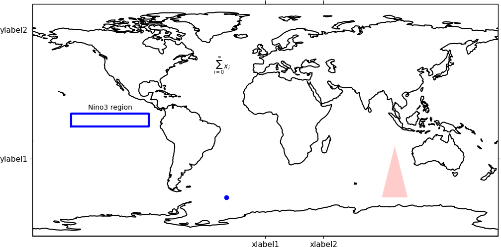
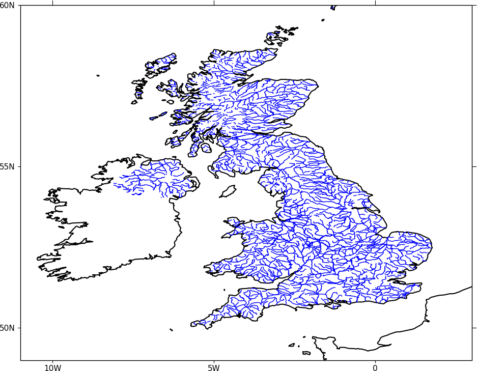
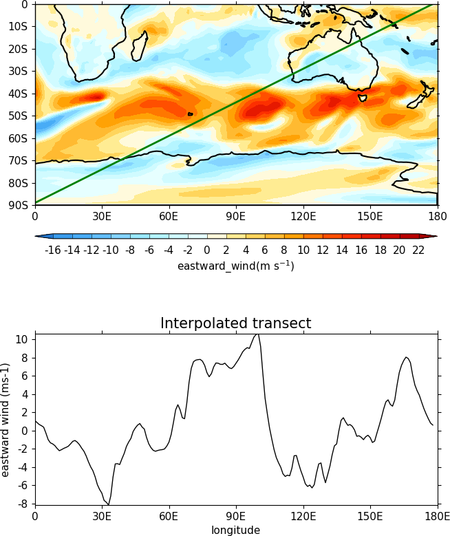

Advanced Use¶
Here are some hints and tips on the advanced use of cf-plot.
Adding user defined lines and text to plots¶
In cf-plot the plot is stored in a plot object with the name cfp.plotvars.plot. If you are making a map plot the the map object is cfp.plotvars.mymap and this is the object you should operate on. The page containing the plots is named cfp.plotvars.plot_master.
To see all the methods for the plot object type
cfp.gopen()
dir(cfp.plotvars.plot)
or
dir(cfp.plotvars.mymap)
In this example we make a blank map plot, change the longitude labels and add a box and some text. For map plots we operate on the cfp.plotvars.mymap object and need to specify transform=ccrs.PlateCarree() to make sure that the plotting is made in regular longitude and latitude coordinates. If the plot is not a map plot then the transform=ccrs.PlateCarree() isn't needed.
{kind=link}
import cf
import cfplot as cfp
import cartopy.crs as ccrs
import matplotlib.patches as mpatches
f=cf.read('cfplot_data/tas_A1.nc')[0]
cfp.gopen()
xticks=[0.0, 45.0]
xticklabels=['xlabel1', 'xlabel2']
yticks=[-30.0, 70.0]
yticklabels=['ylabel1', 'ylabel2']
# Specify some contour levels outside the range of the data
# and make a blank contour plot
cfp.levs(-1000, -900, 100)
cfp.con(f.subspace(time=15), fill=False, colorbar=None,
xticks=xticks, xticklabels=xticklabels,
yticks=yticks, yticklabels=yticklabels)
# A box
cfp.plotvars.mymap.plot([-150, -150, -90, -90, -150],
[-5, 5, 5, -5, -5], linewidth=3.0,
color='blue', transform=ccrs.PlateCarree())
# A symbol
cfp.plotvars.mymap.plot(-30,-60, linewidth=3.0, marker='o', color='blue', transform=ccrs.PlateCarree())
# Text
cfp.plotvars.mymap.text(-120, 8, 'Nino3 region', horizontalalignment='center', transform=ccrs.PlateCarree())
# Equation
cfp.plotvars.mymap.text(-40, 40, r'$\sum_{i=0}^\infty x_i$', transform=ccrs.PlateCarree())
# Filled polygon
cfp.plotvars.mymap.add_patch(mpatches.Polygon([[90, -60], [100,-20], [110, -60]],
facecolor='red',
alpha=0.2,
transform=ccrs.PlateCarree()))
cfp.gclose()
Adding country borders etc can be done using the normal Cartopy operations on the cfp.plotvars.mymap object. Look on the Cartopy web page for examples of these.
Plotting shape files¶
In this example we make a blank map plot and plot the UK rivers from a shapefile. The shapefile used came from DIVA-GIS at http://www.diva-gis.org/gdata. The pyshp Python package is needed for this program.
{kind=link}
import cf
import cfplot as cfp
import numpy as np
import shapefile
import cartopy.crs as ccrs
f=cf.read('cfplot_data/ggap.nc')[3] # data for contour map
sf = shapefile.Reader('GBR_water_lines_dcw.shp') # UK rivers
cfp.gopen()
cfp.levs(-1000, -900, 10)
cfp.mapset(-11, 3, 49, 60, resolution='10m')
cfp.con(f.subspace(pressure=1000), fill=False)
for i in np.arange(len(sf.shapes())):
points = sf.shape(i).points
lons = np.zeros((len(points),1))
lats = np.zeros((len(points),1))
for ip in range(len(points)):
lons[ip] = points[ip][0]
lats[ip] = points[ip][1]
cfp.plotvars.mymap.plot(lons, lats , linewidth=1.0,
color='blue', transform=ccrs.PlateCarree())
cfp.gclose()
Making a transect plot¶
In this example we make a contour plot and plot a transect. We use the cfp.regrid bilinear interpolation routine to interpolate the data. Interpolation points for this routine must be within the data limits of the original data. Care is needed to ensure that the field coordinates go from a low value to a high value. This is usually not an issue with longitude but occasionally with latitude (as in this case) the coordinate goes from the north pole to the south pole. A simple flip of the latitude and data is need here.
{kind=link}
import cf
import cfplot as cfp
import numpy as np
import cartopy.crs as ccrs
f=cf.read('cfplot_data/ggap.nc')[1]
g=f.subspace(pressure=1000) # g is a 2D eastward wind field at 500mb
# Extract out the lons, lats and data
lons=g.coord('X').array
lats=g.coord('Y').array
data=np.squeeze(g.array)
# Flip the lats upside down so they start at -89.14152 and go to 89.14152
# Flip the data as well to match the new latitudes
lats = lats[::-1]
data = np.flipud(data)
# Generate a set of lons and lats to interpolate to
# Here we are making a set of points at 1 degree east and from -87 to 87
# The interpolation points need to be inside the lons and lats of the original data
lons_interp=np.arange(179)
lats_interp=np.arange(179)*0.5-89
# Interpolate the data to the new grid
data_interp=cfp.regrid(f=data, x=lons, y=lats, xnew=lons_interp, ynew=lats_interp)
# Finally let's visually compare our transect data with the original contour field
cfp.gopen(user_position=True)
cfp.mapset(0, 180, -90, 0)
cfp.gpos(xmin=0.25,xmax=0.75, ymin=0.55, ymax=1)
cfp.con(g, lines=False)
cfp.plotvars.mymap.plot(lons_interp, lats_interp , linewidth=2.0,
color='g', transform=ccrs.PlateCarree())
cfp.gpos(xmin=0.25,xmax=0.75, ymin=0.1, ymax=0.4)
cfp.lineplot(y=data_interp, x=lons_interp, title='Interpolated transect',
xticks=np.arange(7)*30, xticklabels=['0', '30E', '60E', '90E', '120E', '150E', '180E'],
yticks=np.arange(10)*2-8,
xlabel='longitude', ylabel='eastward wind (ms-1)')
cfp.gclose()
Manually changing colours in a colour scale¶
The simplest way to do this without writing any code is to modify the internal colour scale before plotting. The colours most people work with are stored as red green blue intensities on a scale of 0 to 255, with 0 being no intesity and 255 full intensity.
White will be represented as 255 255 255 and black as 0 0 0.
The internal colour scale is stored in cfp.plotvars.cs as hexadecimal code. To convert from decimal to hexadecimal use hex i.e. hex(255)[2:] 'ff'
The [2:] is to get rid of the preceding 0x in the hex output.
For example, to make one of the colours in the viridis colour scale grey use:
import cf
import cfplot as cfp
f=cf.read('cfplot_data/tas_A1.nc')[0]
cfp.cscale('viridis', ncols=17)
cfp.plotvars.cs[14]='#a6a6a6'
cfp.con(f.subspace(time=15))
{kind=link}
Colouring land and lakes¶
This is done by changing the land_color, ocean_color and lake_color variables in cfp.setvars.
import cf
import cfplot as cfp
f=cf.read('cfplot_data/tas_A1.nc')[0]
cfp.setvars(land_color='grey', lake_color='blue')
cfp.con(f.subspace(time=15))
{kind=link}
Plotting missing data¶
Masked data isn't plotted.
import cf
import cfplot as cfp
import numpy as np
f = cf.read('cfplot_data/tas_A1.nc')[0]
g = f.subspace(time=15)
# Mask off data less that 290 K
h = g.where(g<290, cf.masked)
# Normal plot with masked data
cfp.con(h, blockfill=True, title='Plot with masked data')
{kind=link}
Masked data is plotted as blockfill in grey.
# Turn off the hardmask and set masked points to 999
h.hardmask=False
i = h.where(h.mask, 999)
# Open a plot with gopen as we will be plotting over a contour plot
cfp.gopen()
cfp.con(h, blockfill=True, title='Masked data plotted in grey')
# Call internal block filling routine
cfp.bfill(f=np.squeeze(i.array), x=i.coord('X').array, y=i.coord('Y').array,
clevs=[990, 1000], lonlat=True, single_fill_color='#d3d3d3')
cfp.gclose()
{kind=link}
Blockfill with individual colours¶
A final call to cfp.con is made to overlay contour lines.
import cf
import cfplot as cfp
import numpy as np
f=cf.read('cfplot_data/ggap.nc')[1]
g=f.collapse('mean','longitude')
x=g.coord('Y').array
y=g.coord('Z').array
data=np.squeeze(g.array)
cfp.gopen()
cfp.con(g, ylog=True, lines=False)
# Call internal block filling routine
cfp.bfill(f=data, x=x, y=y, clevs=[-50, 0], single_fill_color='green')
cfp.bfill(f=data, x=x, y=y, clevs=[20, 40], single_fill_color='purple')
# Add contour lines over the top with zorder=5
cfp.con(g, ylog=True, lines=True, fill=False, zorder=5)
cfp.gclose()
{kind=link}